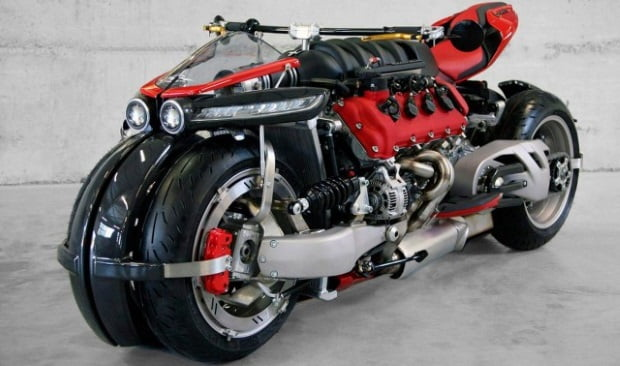

Es la única moto que existe en el mundo con un motor V8 de 4.7 Litros de Maserati y 32 válvulas. Gracias a su motor capaz de producir los 470 caballos de potencia. Creada por LudovicLazareth, mezcla el diseño poderoso de una motocicleta deportiva con las prestaciones de un auto deportivo. Esta bestia en el camino se aloja entre las motos más caras del mundo gracias a su ostentoso precio de 217 mil euros y es la única moto de este tipo que se fabricó en el mundo.
